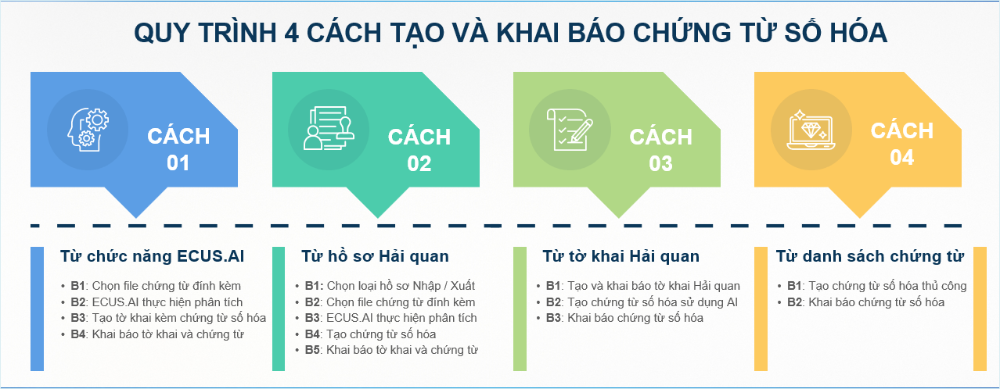
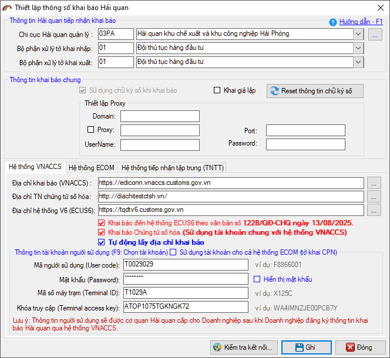

GIỚI THIỆU CHỨC NĂNG
(Tạo và khai báo chứng từ số hóa theo mô hình thông quan tập trung)
1. Giới thiệu chức năng
Trong bối cảnh trí tuệ nhân tạo đang được ứng dụng mạnh mẽ trong nhiều lĩnh vực, hoạt động xuất nhập khẩu cũng đang bước vào giai đoạn chuyển đổi số sâu rộng. Doanh nghiệp không chỉ cần xử lý nhanh các bộ hồ sơ hải quan phức tạp mà còn phải đáp ứng yêu cầu số hóa chứng từ và khai báo điện tử theo quy định mới tại Thông tư 121/2025/TT-BTC ban hành ngày 18/12/2025.
Trong thời gian tới Cục Hải Quan sẽ triển khai mô hình Thông quan tập trung nhằm đẩy mạnh số hóa và hiện đại hóa thủ tục hải quan, với mục tiêu:
- - Giảm tiếp xúc – tăng tính minh bạch
- - Xử lý hồ sơ hoàn toàn điện tử
- - Số hóa toàn bộ chứng từ hồ sơ hải quan thành dữ liệu điện tử.
- - …
Mô hình sẽ được thực hiện thí điểm tại Đội thông quan tập trung (03YY), Chi cục Hải quan KV III từ ngày 01 tháng 06 năm 2026.
Nhằm hỗ trợ doanh nghiệp trong việc tạo và khai báo các chứng từ số hóa theo quy định mới, phần mềm ECUS5VNACCS hiện nay đã thực hiện số hóa được 43 chứng từ và đang dần cập nhật nhiều hơn nữa theo lộ trình của cơ quan Hải quan.
Phần mềm cho phép doanh nghiệp tạo chứng từ số hóa theo nhiều cách khác nhau, từ tự động dựa vào chức năng ECUS.AI đến nhập liệu thủ công.
ECUS.AI là chức năng có sử dụng trí tuệ nhân tạo để phân tích tự động các tiêu chí trên chứng từ. Đáp ứng chỉ tiêu thông tin để tạo tờ khai Hải quan và chứng từ số hóa.

Khi sử dụng phần mềm ECUS5VNACCS, doanh nghiệp có nhiều cách để tạo và khai báo chứng từ số hóa:

Đây là 4 cách, 4 mục để truy cập vào chức năng tạo và khai báo chứng từ số hóa, nhưng hiểu đơn giản thì chúng ta có 2 cách chính để tạo chứng từ.
a. Tạo và khai báo chứng từ số hóa có sử dụng công nghệ AI.
Theo cách này, người dùng chỉ việc đính kèm các file chứng từ, sau đó ECUS.AI tiến hành phân tích tự động. Khi có kết quả phân tích, doanh nghiệp kiểm tra đối chiếu kết quả với chứng từ gốc, sau đó tạo tờ khai kèm chứng từ số hóa để khai báo lên Hải quan mà không cần phải nhập liệu thủ công cho chứng từ.
Người dùng có thể truy cập và sử dụng cách tạo chứng từ bằng AI theo 3 cách sau:
- Cách 1: Tạo chứng từ sử dụng ECUS.AI – từ quy trình 3 bước
- Cách 2: Tạo chứng từ sử dụng ECUS.AI – từ hồ sơ hải quan
- Cách 3: Tạo chứng từ sử dụng ECUS.AI – từ tờ khai hải quan đã có.
b. Tạo và khai báo chứng từ số hóa thủ công (không sử dụng công nghệ AI).
Khi người dùng không sử dụng công nghệ AI để phân tích chứng từ tự động, phần mềm vẫn còn cách nhập thủ công truyền thống từng chỉ tiêu thông tin vào chứng từ. Ở cách này, người khai sẽ tự đối chiếu thông tin trên chứng từ gốc và nhập từng chỉ tiêu thông tin vào phần mềm.
2. Các điều kiện và thiết lập thông số khai báo chứng từ số hóa
Để khai báo chứng từ số hóa đến hệ thống tiếp nhận, doanh nghiệp sử dụng tài khoản VNACCS đang dùng để khai báo tờ khai Hải quan, đồng thời thực hiện thiết lập địa chỉ khai báo, tài khoản khai báo chứng từ số hóa trên phần mềm.
Người khai truy cập vào menu Hệ thống / Thiết lập thông số khai báo VNACCS:

Tại đây, bạn đánh dấu tích chọn vào mục Khai báo Chứng từ số hóa (Sử dụng tài khoản chung với hệ thống VNACCS)
Phần địa chỉ tiếp nhận chứng từ số hóa do phần mềm mặc định hoặc người khai tích chọn vào Tự động lấy địa chỉ khai báo, phần mềm sẽ tự động lấy thông tin về.
LƯU Ý:
- 1. Người khai thực hiện khai báo chứng từ số hoá cho tờ khai tại thời điểm: sau khi tờ khai được phân luồng.
- 2. Đối với các chứng từ có trong hồ sơ tờ khai nhưng chưa có trong danh sách chứng từ số hóa mà hệ thống có thể tiếp nhận thì doanh nghiệp gửi đính kèm dạng file lên hệ thống, thông qua mã chứng từ CTK99 – Chứng từ đính kèm dạng file.
- 3. Đối với trường hợp doanh nghiệp muốn gửi bản Đăng ký kiểm hóa, lấy mẫu thì chọn mã chứng từ KH01 – Đăng ký kiểm hóa lấy mẫu.
Bản quyền © thuộc về Công ty TNHH Phát triển công nghệ Thái Sơn